Modified Box-Muller Algorithm
The Idea
11/25/2010
In the Box-Muller algorithm, two uniform random variables are first generated to obtain two iid standard normal random variables.
The two uniform variables should satisfy some specific condition,
or otherwise they will be thrown away and another two uniform variables are generated.
When every two uniform variables are generated, they have 1-π/4=21.46% chance of being thrown away.
Here some of the uniform variables that are thrown away are kept and used to generate normal random variables,
in order to make the Box-Muller Algorithm more efficient.
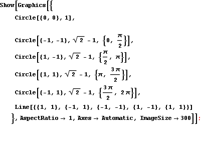
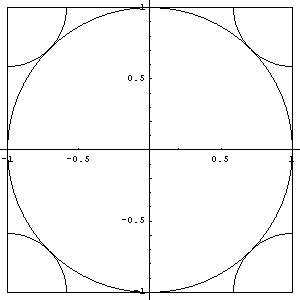
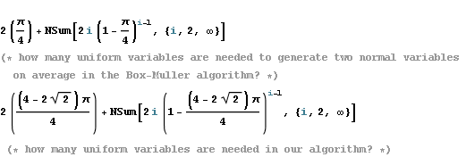
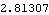
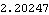
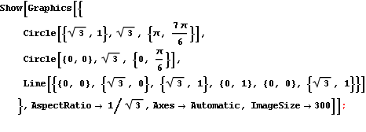
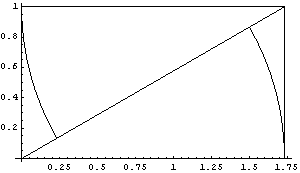
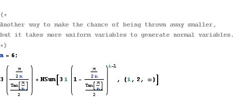
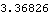
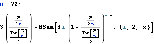
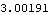
Normal Random Variable Generator
11/29/2010
Based on the above idea
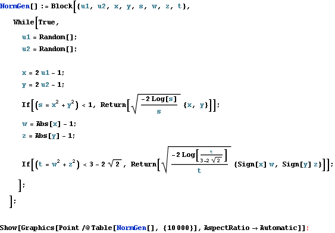
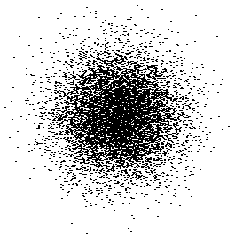